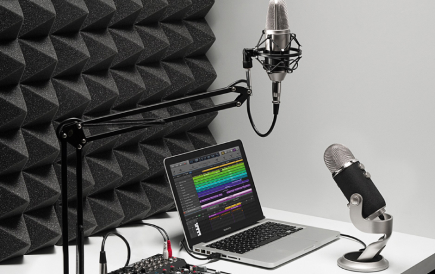
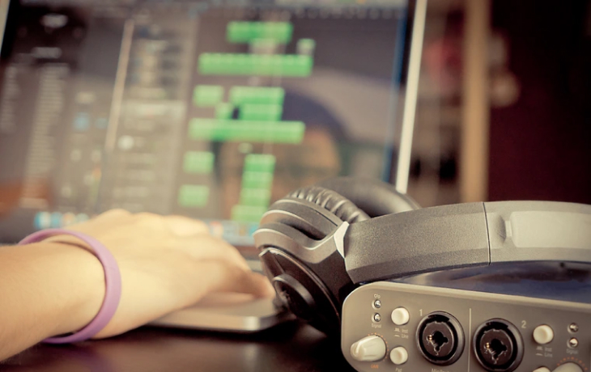
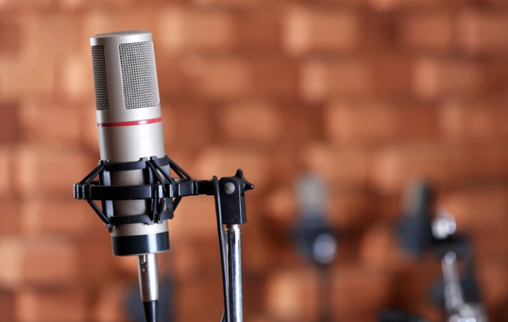
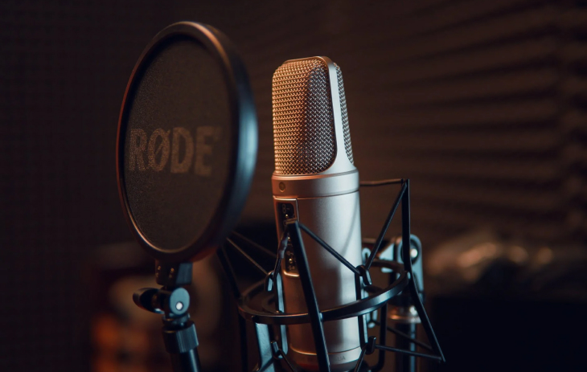
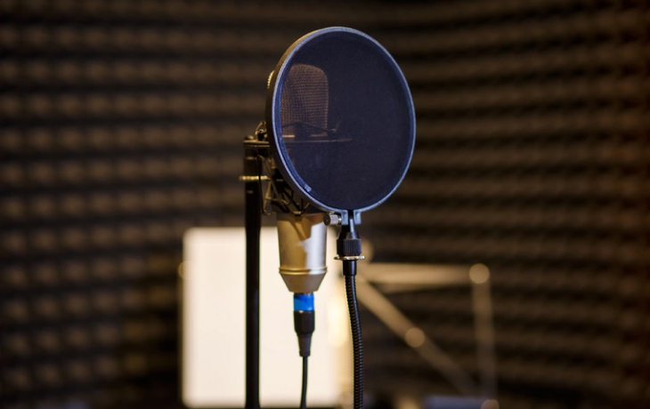
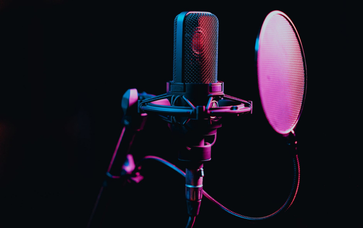
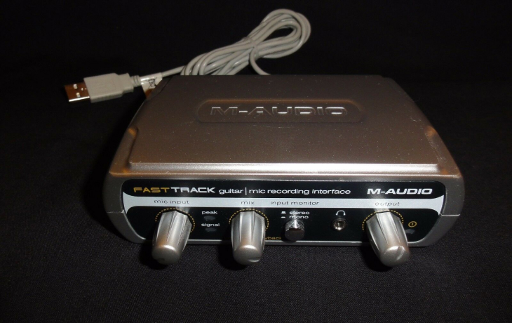
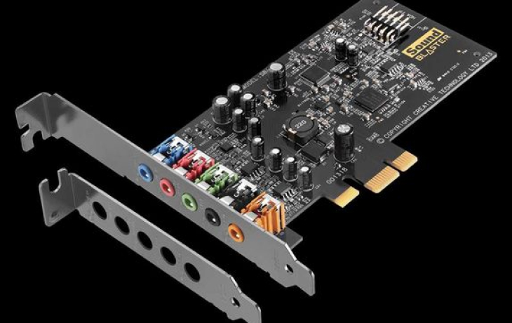
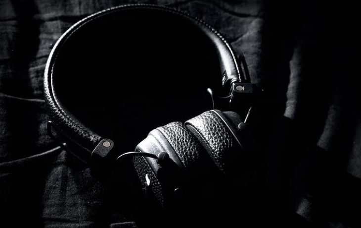
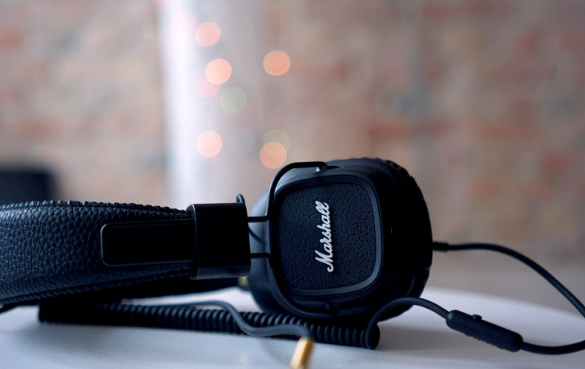

Как стать актером озвучки
Домашняя студия
Во время обучения вам наверняка захочется попрактиковаться и если вы не хотите идти на студию звукозаписи, платить деньги за пользование оборудованием, вы можете оборудовать домашнюю студию звукозаписи. На этой странице мы покажем каким оборудованием вам нужно будет обзавестись, что бы качественно и удобно записываться дома.
Есть два пути, по которым можно пойти.
Первый – комнатная студия. По сути, это просто уголок в комнате. Все оборудование при необходимости легко убирается. Это самый простой вариант, если звукозапись не является вашим основным занятием.
Второй – это выделенная студия. Например, ею может стать кладовка, в которой помещается хотя бы компьютерный стол (в идеале – комната и студийная мебель). Другой вариант – вокальная кабина (ее называют еще акустической или дикторской), которую можно разместить прямо в квартире. Это оптимальный вариант, если вы планируете заниматься звукозаписью на дому профессионально или полупрофессионально.
Компьютер или ноутбук
Для начала, конечно, можно попробовать использовать любой компьютер, который есть в вашем распоряжении. Но есть очень важный момент. Для записи звука и его редактирования вам понадобится соответствующая программа – это может быть Adobe Audition, AVS Audio Editor, Avid Pro Tools, Presonus Studio One, Propellerhead Reason и так далее (у большинства программ есть демо-версии). И такие программы предъявляют достаточно высокие требования к вычислительным мощностям компьютера. Скажем, небольшой нетбук для этих целей не слишком подойдет.
 При желании можно попробовать начать с программ попроще – большинство из них бесплатны и не требуют высоких производительных мощностей от компьютера. Популярные программы для домашней звукозаписи – это Audacity, Free Audio Recorder и другие.
Выбор между стационарным компьютером и ноутбуком – дело вкуса и личного выбора. Лучше всего здесь исходить из своих потребностей. Но ноутбук предоставляет возможность сделать свою мини-студию мобильной и при необходимости без труда переносить ее – часто именно это определяет выбор.
Ключевые критерии выбора компьютера или ноутбука для домашней студии звукозаписи:
Микрофон
Микрофон – один из самых ответственных выборов, особенно если он будет один. От него в первую очередь зависит качество записи. Микрофоны для Скайпа типа Sven здесь не подойдут – они могут быть хороши для общения, но в записи дают заметный фоновый шум, а качество звука оставляет желать лучшего. Ориентировочный ценник для хорошего микрофона, который подойдет для качественной звукозаписи, – от пяти-шести тысяч рублей.
 Студийный микрофон может быть динамическим или конденсаторным. Конденсаторные микрофоны лучше работают с высокочастотными инструментами (акустическая гитара, клавишные), а динамические – со средне- и низкочастотными (ударные, электрогитара, бас).
Динамические микрофоны считаются идеальными для сцены – они конструктивно более прочные, более устойчивые к перепадам влажности, у них выше запас усиления до появления обратной связи (она возникает, когда несколько микрофонов ведут запись рядом друг с другом).
Для домашней записи голоса чаще всего используют конденсаторные микрофоны. Они различаются по размеру диафрагмы. От размера диафрагмы зависит уровень записи высоких/низких частот. Так, если вам нужно записать трек с большим количеством высокочастотных инструментов, идеален будет конденсаторный микрофон с маленькой диафрагмой (это «микрофоны-карандаши»).
Но если вы планируете приобрести только один микрофон, как минимум на начальном этапе, оптимальным выбором будет конденсаторный микрофон с большой диафрагмой. Это вариант, подходящий для большинства задач в домашней звукозаписи.
Если вы собираетесь записывать только голос, предпочтительно выбирать настольный микрофон – это позволит обойтись без стойки для него и снизит общие затраты на оборудование.
Приведем примеры нескольких конденсаторных микрофонов с большой диафрагмой, прекрасно показывающих себя в условиях домашней звукозаписи. Большинство из них можно найти в специализированных магазинах аудиотехники.
Среди рекомендуемых можно выделить:
Поп-фильтр
Поп-фильтр – важный аксессуар при записи голоса. Он выполняет две функции: гасит экстремальные («взрывные») частоты и защищает микрофон от «заплевывания».
При произнесении некоторых звуков («п», «б») создается сильный поток воздуха. В обычной речи этого не слышно. Но на записи возникают «хлопки». Во избежание таких «хлопков» и необходим поп-фильтр.
Поп-фильтр может быть с нейлоновой мембраной или с металлической. Первые – дешевле, но они и менее долговечны.
 Микрофонная стойка
Нужны ли вам микрофонные стойки – зависит от целей, с которыми вы оборудуете студию, и от того, какой именно микрофон вы приобрели. Если вы записываете только голос и микрофон у вас настольный – стойка ни к чему. Если вы пишете музыку и/или микрофон ручной – без стойки не обойтись.
Конструктивно стойка может быть:
Звуковая карта
Звуковая карта – один из важнейших элементов домашней звукозаписывающей студии. Для качественной записи возможностей встроенной звуковой карты компьютера попросту не хватит. Отметим важнейшие моменты, на которые стоит обратить внимание при выборе внешней звуковой карты:
 Наушники
Наушники для студийной записи могут быть открытыми или закрытыми. Закрытые идеальны для записи, поскольку дают лучшую звукоизоляцию. Для редактирования и сведения треков лучше предпочесть открытые наушники, поскольку они дают более высокое качество звука.
 